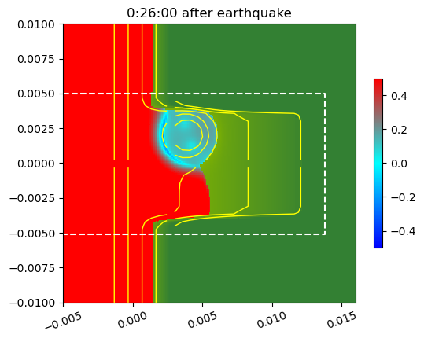

Image source: /Users/rjl/clawpack_src/clawpack_master/geoclaw/examples/tsunami/eta_init_force_dry/_plots/frame0013fig11.png
Other figures at this time: Computational domain coastal area All Figures
Other frames: 0 1 2 3 4 5 6 7 8 9 10 11 12 13 14 15 All Frames